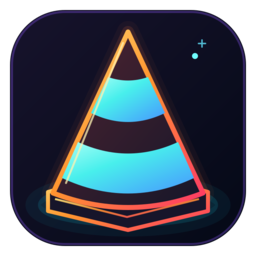
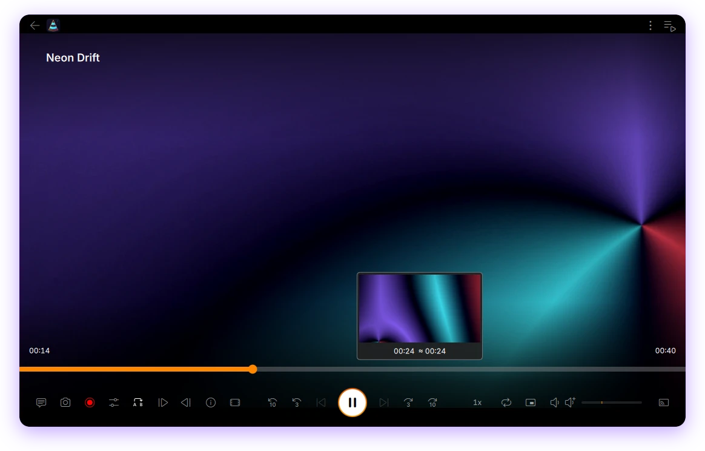
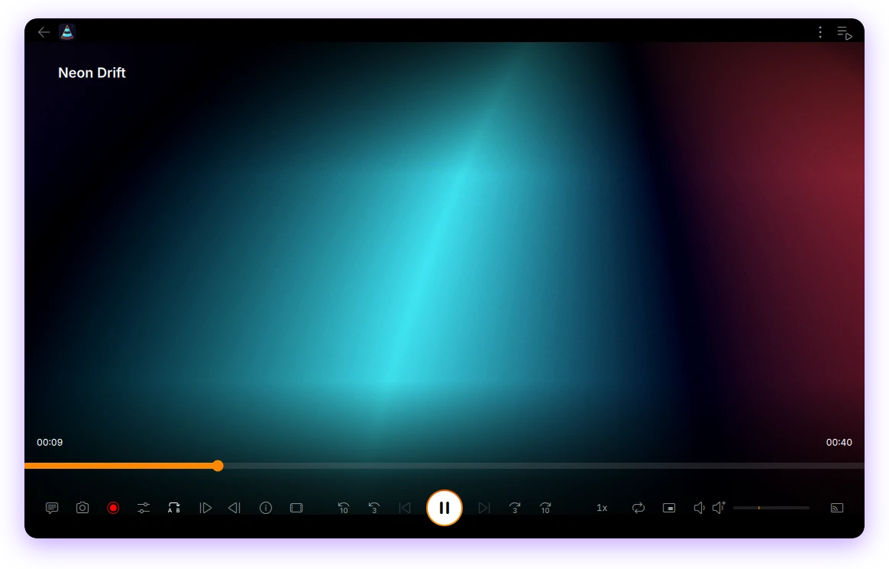

Seek-bar previews
Hover the timeline to see the frame and timestamp before you jump, in the window and in fullscreen.

The VLC you know, with a neon glow. Thumbnail previews on the seek bar, Picture-in-Picture, speed and repeat presets, volume boost and the little controls you reach for every day.
Checksums, source code and all files on the release page. Installs next to your regular VLC.

VLC's engine, codecs and interface, plus the controls that were missing.
Hover the timeline to see the frame and timestamp before you jump, in the window and in fullscreen.
A small always-on-top window with its own seek bar, ±3 s / ±10 s, play/pause and mute.
From 0.25× to 4× in one click, with native fine adjustment still there.
Pick how many extra plays, or unlimited. A badge on the button shows the count, and it's remembered.
Presets from 125 % up, with a peak limiter to keep quiet videos clear.
Pick up where you stopped. Speed, volume, tracks and delays are remembered per file.
Resolution, codecs, decoder and hardware decoding at a glance, each with a copy button.
←/→ 5 s, Shift 10 s, Ctrl 60 s, E / Shift+E frame by frame, plus ±3 s buttons on the toolbar.
New icon, Inter typography, light and dark themes. Own settings and launcher, so regular VLC stays untouched.
Captured from a fresh profile, playing an abstract animation made for this page.

All three install next to regular VLC. Files and SHA256SUMS are on the release page.
Fedora 44, x86_64. Installs into /opt/vlc-neon.
sudo dnf install ./vlc-neon-1.0.1-1.fc44.x86_64.rpmUbuntu 24.04+, Debian 13+, Fedora 40+ (glibc 2.39+).
chmod +x vlc-neon-1.0.1-x86_64.AppImage
./vlc-neon-1.0.1-x86_64.AppImageUses the KDE 6.11 runtime from Flathub.
flatpak install --user ./vlc-neon-1.0.1.flatpak
flatpak run io.github.TaoufikGFX.vlc-neonPrefer building it yourself? The repository holds the patches on top of a pinned VLC commit, with scripts/fetch-upstream.sh and scripts/build.sh. See the README.
Based on VLC media player by VideoLAN and its contributors. Not an official VideoLAN product.
Free software under the GPL-2.0-or-later, like VLC. Every release ships the complete source: the pinned upstream VLC, the patches and the build scripts. Interface font: Inter (SIL OFL).
VLC Neon is free. If it makes your evenings a bit nicer, a coffee keeps the next release coming.
Support on Ko-fi